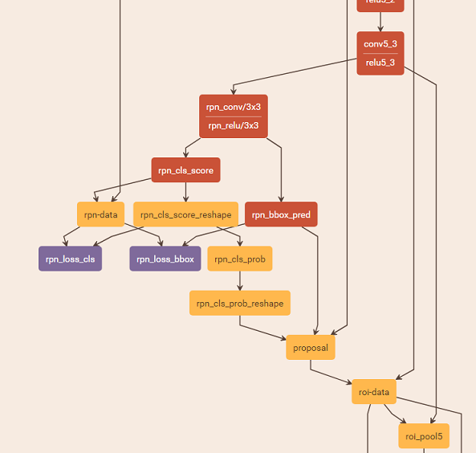
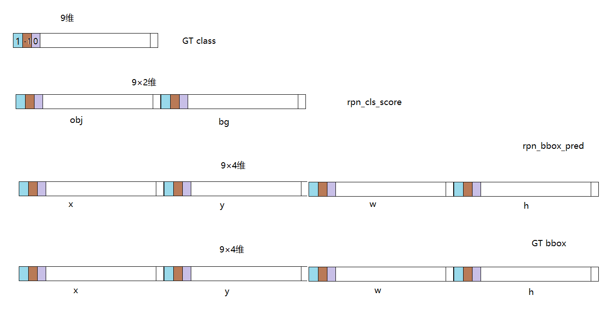

本文解释了 Faster R-CNN 中的 RPN 部分的 GT 生成以及 loss 的计算方式.
RPN 结构
RPN 网络使用 特征提取网络的输出 feature map 作为输入. 然后在此基础上,用 anchor 的方式计算 分类误差 和 定位误差. Faster R-CNN 中的 RPN 网络在 caffe 框架中如下图所示.

假设 RPN 网络输入 feature map 尺寸为 , 那么图中 rpn_cls_score 和 rpn_bbox_pred 层的输出尺寸分别为 以及 . rpn-data 是真实值, 与这两个 feature map 计算 loss. 可以推测, rpn-data 具有两个与 rpn_cls_score 和 rpn_bbox_pred 分别对应的 GT feature map. 对应于 rpn_cls_score 的真实值的尺寸为 , 对应于 rpn_bbox_pred 的真实值的尺寸为 .
Ground Truth 的尺寸和计算方式
以下部分为个人理解
在 Faster R-CNN 中, RPN 输入 feature map 的每个空间位置都对应 9 个 anchor, (共有 个空间位置), 每个 anchor 产生一个预测框. Faster R-CNN 的正负样本生成策略是:
- 将每一个 GT box 与所有的 anchor 计算 IoU, 将 IoU 最大的 anchor 与当前 GT box 对应, 作为正样本, 记为 1. (这就保证了每个 GT box 至少有一个 anchor 与之对应)
- 将每一个 anchor 与 所有 GT box 计算 IoU, 若当前 anchor 与某一个 GT box 的 IoU 超过 0.7, 则将当前 anchor 与此 GT box 对应, 将当前 anchor 作为正样本, 记为 1. 对与所有 GT box 的 IoU 都小于 0.3 的 anchor 作为负样本, 记为 -1. 不满足上述条件的其他 anchor 不计入讨论, 记为 0.
根据上述策略可以知道, anchor 和 GT box 之间是 多对多 的关系. 但是这是不合理的, 若一个 anchor 对应了 多个 GT box, 那岂不是这个 anchor 要负责检测多个物体? 这是不可能的. 因此, 个人感觉上述策略中, 第 2 步是在不满足第 1 步条件的 anchor 中进行的. 一旦一个 anchor 找到了与之对应的 GT box, 它就不会再与其他 GT box 计算 IoU, 这样, 即使某个 anchor 与 多个 GT box 的 IoU 都大于 0.7, 此 anchor 仍然只能与一个 GT box 对应.
2018/11/06 更新: 事实上，在为每个 anchor 匹配 GT box 时，是每一个 anchor 和每一个 GT box 算 IoU，为每个 anchor 找到与之 IoU 最大的 GT box。并计算每个 anchor 和与之对应的 GT box 之间的 delta 作为 RPN 学习的目标。
因此, 从 GT box 的角度看, 一个 GT box 有一个或多个 anchor 与之对应, 这些 anchor 负责检测这个 GT box.
Ground Truth 及 相关图示
下图为每一个空间位置处的向量.

在上图中, GT class 是一个 9 维的向量, 其可能值为 , 1 表示正样本, 0 表示负样本, -1 表示非样本. 相同颜色表示某一空间位置处的不同类型的值. 在 GT class 向量中某处为 1 , 表示此空间位置处的此处的 anchor 为正样本, GT bbox 向量中对应的 4 个值为此 anchor 对应的 GT box 的真实 . 这样就可以与 rpn_cls_score 和 rpn_bbox_pred 对应位置的预测值计算损失. 针对正样本, 要计算 分类 和 定位 两种损失, 对于负样本, 只计算 分类损失, 因此 GT bbox 向量中对应位置的值不参与计算. 对于非样本, 不计算任何损失. 因此在生成 GT bbox 向量时, 只需计算正样本 anchor 对应 GT box 的 值.